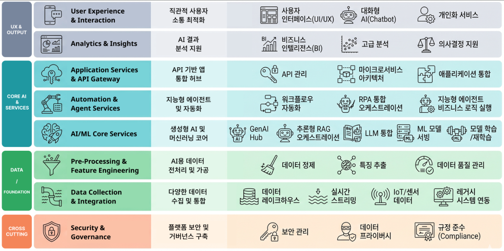
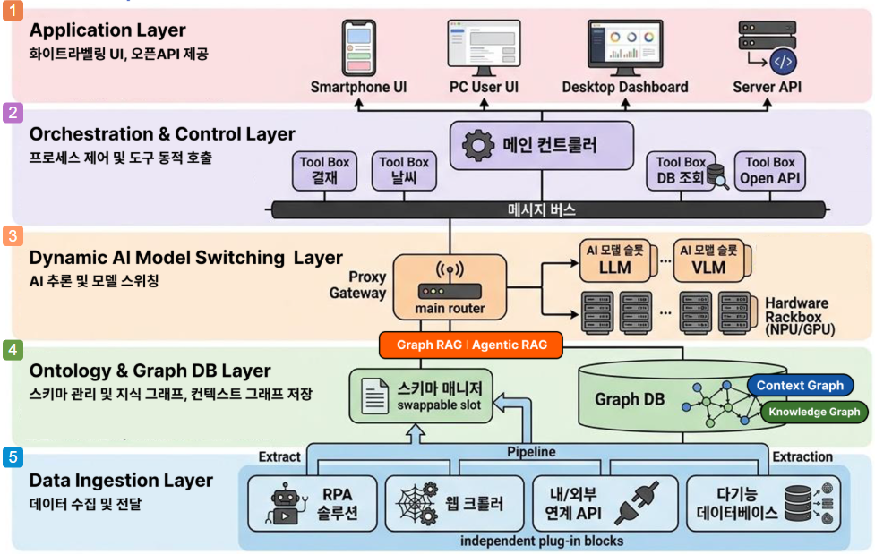
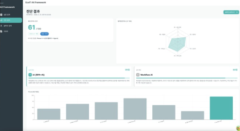
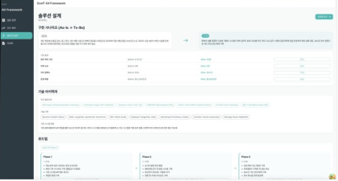
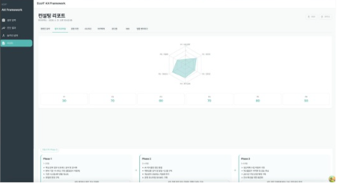
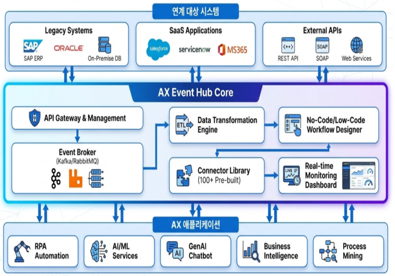
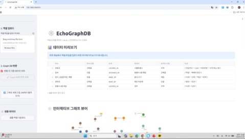
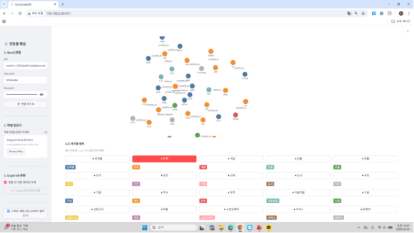
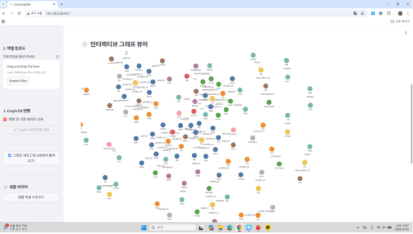

Business · AX Platform
데이터 수집부터 AI 코어 구동, 워크플로우 자동화, 보안 거버넌스까지 — AX의 전 영역을 하나의 아키텍처로 통합 지원하는 엔터프라이즈 전주기 AI 플랫폼.
Platform Overview
데이터 수집부터 AI/ML 코어 구동, 지능형 에이전트 기반의 워크플로우 자동화, 최종 사용자 경험(UX) 및 보안 거버넌스까지 통합 지원하는 4대 아키텍처 영역으로 구성됩니다.

IoT 센서 및 레거시 시스템의 데이터를 실시간 수집하고 AI 학습용으로 정제합니다.
LLM 및 머신러닝 코어를 통합하고, 지능형 에이전트와 RPA를 연결해 비즈니스 로직을 실행합니다.
대화형 AI와 시각화된 BI를 통해 최적화된 사용자 상호작용과 인사이트를 제공합니다.
Data → Core AI → UX 전 영역에 걸쳐 보안 관리와 데이터 프라이버시 규정 준수를 보장합니다.
Business Category
7대 산업의 비즈니스 특성에 맞춰 데이터 수집·자동화·분석을 설계하고 적용합니다.
레거시 시스템 연동을 통한 대국민 지능형 챗봇, 안전한 데이터 레이크하우스 구축
공급망 데이터 수집/통합, RPA 기반 발주 및 재고 관리 자동화
IoT/센서 데이터 실시간 스트리밍 및 예지보전, 공정 워크플로우 자동화
분산된 시설의 실시간 데이터 수집 및 의사결정 지원 대시보드(BI) 운영
민감 의료 데이터의 보안 관리, ML 모델 기반 진단 보조 및 환자 맞춤형 서비스
데이터 프라이버시 및 규정 준수 환경 내 고급 분석 및 개인화 대화형 AI 서비스
API 게이트웨이 및 마이크로서비스 아키텍처 기반 앱 통합 / 네트워크 데이터 분석
ECHO LLMOps
차별화된 ECHO AIOps를 통해 거버넌스 확립 ➔ 지식의 구조화 ➔ 완벽한 실행 ➔ 효율적인 운영으로 이어지는 독보적인 파이프라인 차별성을 가집니다.

웹 크롤러, RDBMS와 다양한 문서 처리 시스템으로 대량의 비정형 문서(이미지, PDF)를 구조화된 데이터로 파싱합니다.
파싱된 데이터를 스키마 매니저가 분석, Neo4j 기반 Knowledge Graph(지식)와 Context Graph(암묵지)로 매핑합니다.
Proxy Gateway를 통해 사내 구축형 LLM, 상용 API, VLM(시각언어모델) 중 최적의 모델을 동적 호출. 기저에는 고효율 저비용 연산을 위한 NPU/GPU 배치.
LangGraph 기반 메인 컨트롤러가 에이전트의 워크플로우를 지휘하고, 내외부 연동 API Tool Box를 활용해 업무를 수행합니다.
화이트라벨링이 가능한 UI 및 관리자용 데스크톱 대시보드(AI Workspace), 타 시스템 연동을 위한 API를 제공합니다.
AX 진단 · Consulting Automation
진단 → 설계 → 리포트로 이어지는 컨설팅 프로세스를 AI가 자동화합니다.



데이터 전처리 · Document AI
비정형 문서를 구조화된 데이터로 전환하는 Document AI. Powered by Upstage.
문서당 40분 ➔ 3분 (일평균 3,150장 · 50,000개 항목 추출 시)
서식 변경에 따른 템플릿 재설계 및 추가 학습 비용 전면 제거
데이터 파이프라인 · iPaaS (AX Event Hub)
No-Code로 API를 만들고, 이벤트 기반 아키텍처로 대용량 연동을 안정적으로 처리합니다.
이기종 시스템/DB 간 데이터 실시간 연동 및 정합성 보장. 전처리·데이터 수집 단계의 과도한 단순 변환 인건비 발생을 제어/방지합니다.
복잡한 코딩 없이 클릭만으로 API 개발 및 배포를 자동화합니다.
Kafka / RabbitMQ 기반의 대용량 이벤트 처리 및 확장성을 제공합니다.

지식 자산화 · AX Ontology
파일 데이터의 그래프 변환부터 인터랙티브 뷰어까지, 지식을 자산화합니다.


